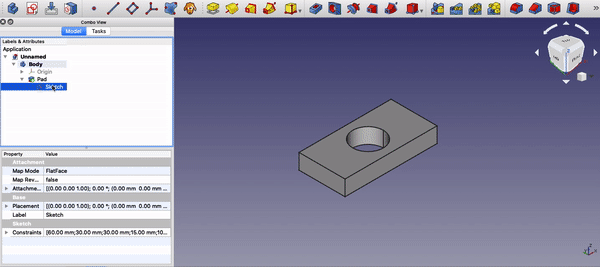
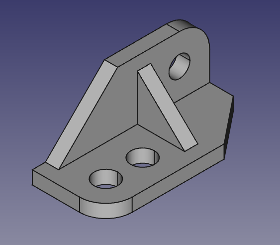
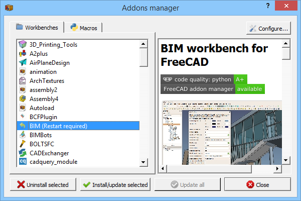
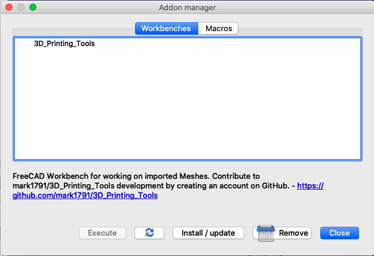
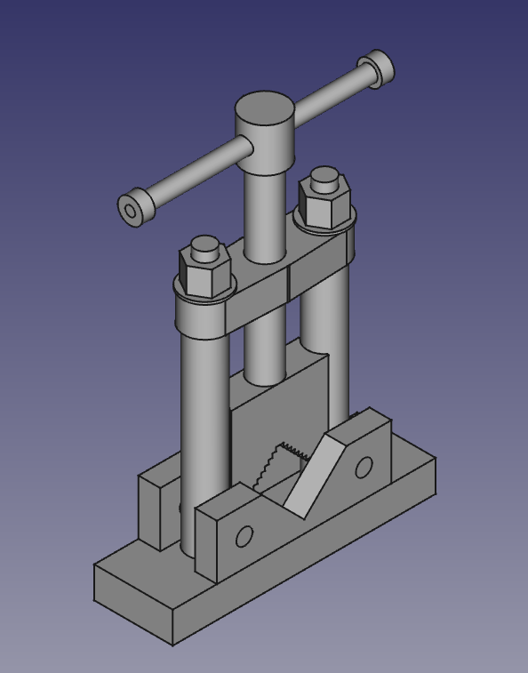
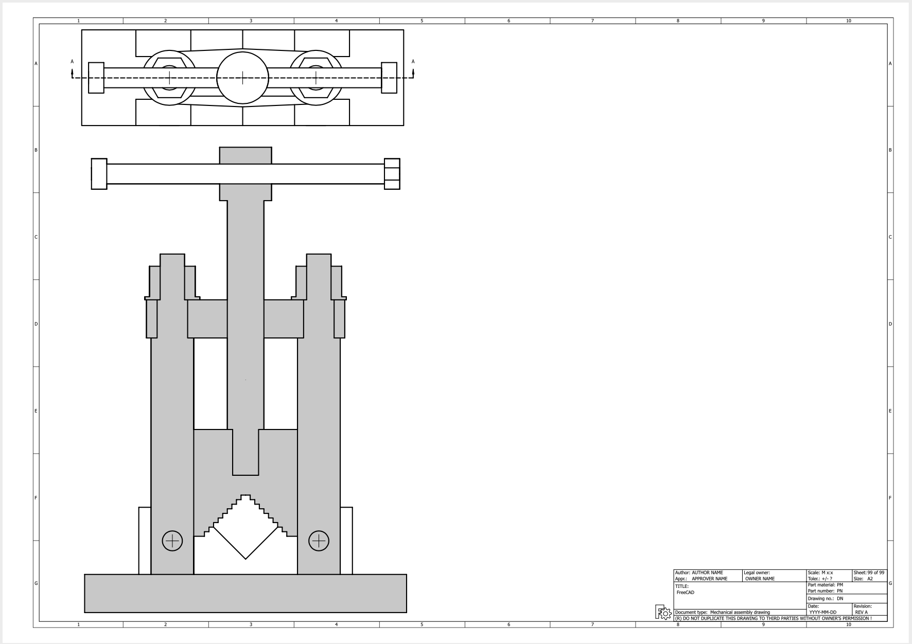

Intro to FreeCAD
Posted on Thu 31 December 2020 in Engineering
MCP100 is a course that all first year undergrads in IITD have to go through. It consists of two parts: the first part is engineering drawing, using rulers and pencils, and CAD. After a disastrous drawing minor, the next phase involved getting to terms with CAD. The CAD package our course instructor decided on was FreeCAD, and since the minor ended, I've done nothing but create FreeCAD models.
I'm not a pero1 at it though, (there's still plenty to learn), and once that is done, there are plenty of bugs to fix :P. I do think I've got a decently good footing in it, and I'll be sharing my experiences here.
Parametric Modelling
While the basic concepts of Drafting are pretty easy to pick up (parallel lines, projections, isometric view etc), the concepts of 3D CAD are a bit different. Most 3D CAD packages you'll encounter will belong to a family of softwares called Parametric Modellers: Fusion 360, Inventor, SolidWorks, Siemens NX are all parametric modellers. What 'Parametric' means is that the geometry of your part is determined by parameters, and changing the parameters changes the geometry. Here's a small example:

Notice how changing the parameters of the sketch change the values of the model as well. As opposed to this Direct Modelling is a method of modelling which is more like molding clay: once the hole is made, changing it's parameters are trickier. This is used more in the art industry, and softwares such as Blender Maya and 3DSMax are direct modellers.
Parametric modeling has it's benefits in manufacturing; it is very easy to translate exact dimensions to the part when using this methodology as opposed to direct modelling. One downside is that modelling curves and free-form surfaces is notoriously difficult. There are many more articles on parametric vs direct modelling on the internet here, here and here, so I won't go further in this article.
FreeCAD: 3D Parametric Modelling for Free
Notice something common in all the aforementioned softwares? Their prices. All of them, with the exception of Blender, cost over $1000 for a single license. The ones that don't come with a license, generally tie you to their platform with a notorious subscription-based model (Autodesk, I'm looking at you). FreeCAD in this manner is pretty good, but you get what you pay for. I was expecting it to be like Blender2, but became pretty disappointed when I saw that it's pretty buggy and not as fully featured as other packages.
I'm not a n00b to parametric modelling, having done it multiple times in Fusion 360 for several projects, so jumping into FreeCAD was relatively painless. Much of the workflow is the same; create a sketch, extrude (they call it 'pad' here), create another sketch, push (they call it 'pocket' here), rinse and repeat.
In a few hours time, I was done with the assignment that was uploaded.

Here are some observations I picked up while doing the assignment:
- Change the line drawing to 4xMSAA for smoother lines
- Change navigation style to Blender (More intuitive for me, as I have prior experience with Blender)
- Change orbit style to 'Turntable'. Trackball is a nightmare
- Change to a dark theme If you're on Windows or Linux. Any theme is horribly glitchy on Mac
- Background color for the viewport can be changed in settings as well, if you're more used to AutoCAD/Blender dark backgrounds
- The Cube is the best way to navigate; try to spend most of your time in isometric views and front/side/back views. Panning/rotating is not too smooth here compared to the other packages.
- If you've zoomed in too much or too little, use the 'fit contents to viewport' button or just hit V and F
More Complex models
I then decided to do something a bit more complex: create and assemble an entire product using FreeCAD. I have done this with Fusion 360 twice, and since FreeCAD is not very different, it should handle this workload fine as well.
Wrong.
There are so many features that other CAD packages have, which have no analogue in FreeCAD, or a very half-baked implementation.
- You created a sketch with multiple faces in it and want to extrude only a select few of those? Nope, sorry, can't do that
- You created all your parts and want to assemble them? Nope, FreeCAD doesn't ship with an assembly workbench. You need to install another assembly workbench. By 'Other', there is only one assembly workbench for v18.x (A2Plus), and Assembly3 and Assembly4 are for v19+ only.
- Now you want to install this workbench? Well, good luck if you're on Mac, because the addon manager seems to be broken. Here's what it looks like on the FreeCAD wiki, and here's what it looks like on my machine
 
So much for platform independence. I had to install the addon manually which,
thankfully, was painless enough. No proprietrary formats involved, just clone
the git repo into the Mod directory
Once the assembly was imported, using A2Plus, I had to manually import all the parts in one file separately. A2Plus didn't pick them up automatically and add the parts as different parts: if you open the file normally, it just mushes all the parts up as one big 'blob', which is then inserted.
After some frustration, the Assembly was finally complete.

I now had to generate a top view and a cross-sectional view. The procedure for this was pretty simple: go into TechDraw, insert a top view, then insert a sectional view. This would be great and smooth, if only the section view wasn't so glitchy. I couldn't find options to change hatching patterns for individual parts, and the handle for the vice glitched out and wasn't shaded. Instead, there were these two long, parallel lines that I couldn't delete. And how do you scale views in TechDraw!? Everything I tried didn't work, and finally I had to increase the paper size to fit the diagram in 1:1. This was ok for a vice, but could you imagine designing your next aeroplane in this software?

Concluding remarks
I do have mixed feelings for this software: on one side, it represents that large softwares with multimillion dollar licenses can also have open-source alternatives. On the other hand, it's bugginess, glitchiness and lack of industry-grade features truly disappoint me. Of course, since it's open source, sitting on the sidelines and pointing fingers won't help. The only way to fix the software is to wade into the muck yourself and help with reporting and fixing bugs. This is a double-edged sword, because in one way it gives you freedom and absolute control, but on the other hand, for a student looking to use a glitch-free software on his computer to pass a course, well...
I would like to point out that even though I've bashed FreeCAD quite a bit for bugs, do note that even using the most premier CAD packages don't save you from bugs.
1 IITD lingo for Pro :P
2 Blender was initially started as an in-house creation tool and had significant corporate backing from the start, which explains it's superiority in overall fit, finish and polish to other kludgy open-source softwares. The Blender community (Both developers and artists) have also done an awesome job keeping the software relevant and up-to-date. More on this here